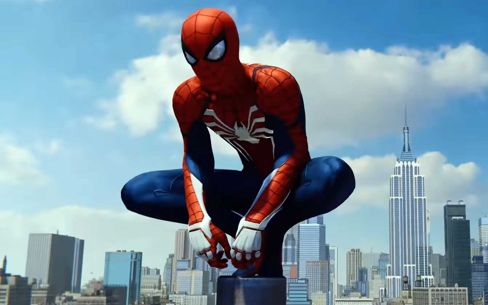
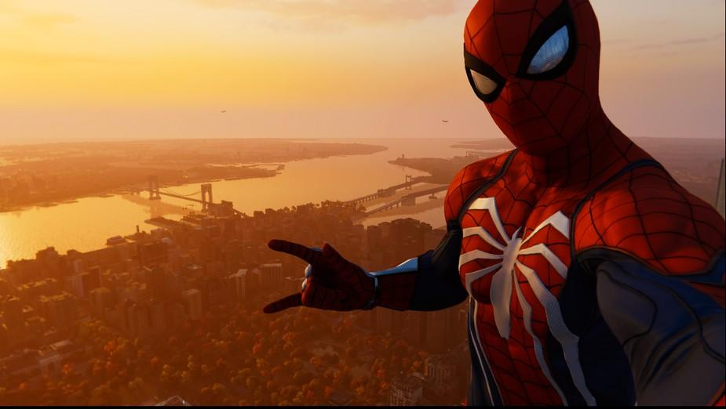

| Pochodzenie | Amerykańskie |
| Płeć | Mężczyzna |
| Gatunek | Nadczłowiek |
| Waga | 76kg |
| Umiejętność | Fizjologia pająka |
| Kolor oczu | Piwny |
| Twórca | Stan Lee |
Przeciętny nastolatek, Peter Parker (Tobey Maguire) przeistacza się w superbohatera pod wpływem ukąszenia przez radioaktywnego pająka. Kiedy jego ukochany wuj zostaje brutalnie zamordowany przez włamywaczy, Peter przysięga sobie, że użyje swoich niezwykłych sił, aby pomścić jego śmierć.